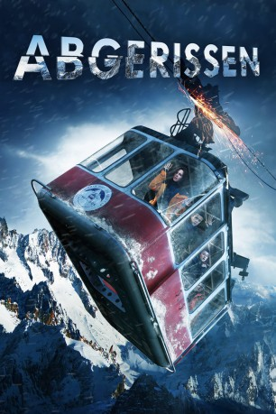

#12097 Abgerissen
Alternativ: Break (Englischer Titel)
 
 IMDB-Wertung: 4.1 / 10
IMDB-Wertung: 4.1 / 10  Tomatometer: 91
Tomatometer: 91  Metascore: 0
Metascore: 0 
Eine Gruppe von drei Jungs und zwei Mädchen macht sich auf den Weg zu einer alten Seilbahn, um eine unvergessliche Silvesterfeier auf dem Berg zu feiern. Ein lustiges Abenteuer wird schnell zu einem Albtraum, als die Seilbahn über dem Abgrund stehen bleibt. Kälte, die Enge und die Angst vor einem langsamen Tod lassen den wahren Charakter der Menschen zutage kommen und schnell kämpft jeder nur um sein eigenes Leben.
Jahr: 2019
Dauer: 85 Minuten
FSK: 0
Land: Russland Studio: Capelight PicturesTonspuren: DTS - ,
Untertitel: Deutsch,
Auflösung: 1080p (1920x720) Größe: 4741 MB
Genre: Thriller
Regisseur: Tigran Sahakyan
Drehbuch: Denis Kosyakov, Alexandr Nazarov, Olga Rud, Tigran Sahakyan
Soundtrack:
Darsteller:
- Irina Antonenko als Katya
- Denis Kosyakov als Denis
- Andrey Nazimov als Kirill
- Anastasiya Grachyova als Masha
- Vladimir Gusev als Caretaker
- Aleksandr Nikitchenko als Taxi Driver
- Ingrid Olerinskaya als Vika
- Angelina Pikovskaya als Katya's daughter
- Viktoriya Pyatakina als Caretaker
- Kseniya Shumeyko als Kirill's sister
- Sergey Todorov als Snow Groomer
- Marina Vasilenko als Kirill's mother
- Elena Vetrova als Caretaker
Datei: X:\2019(A-F)\Abgerissen (2019, FSK0, 1920x720).mkv seit 05.12.2019
Festplatte: HD 2018(G-Z)-2019(A-Z)
 Es gibt insgesamt 60 Filme in der Gruppe '2019(A-F)'
Es gibt insgesamt 60 Filme in der Gruppe '2019(A-F)'